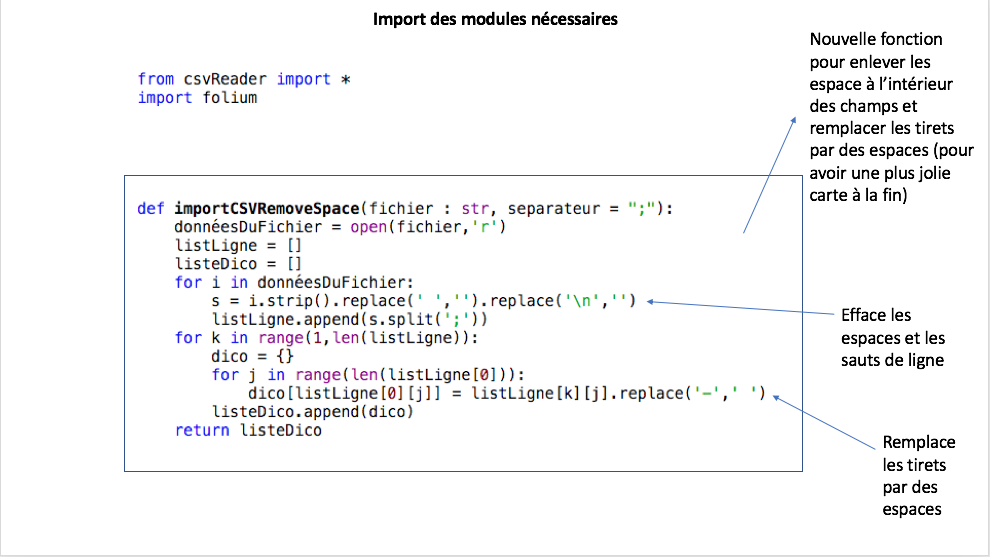
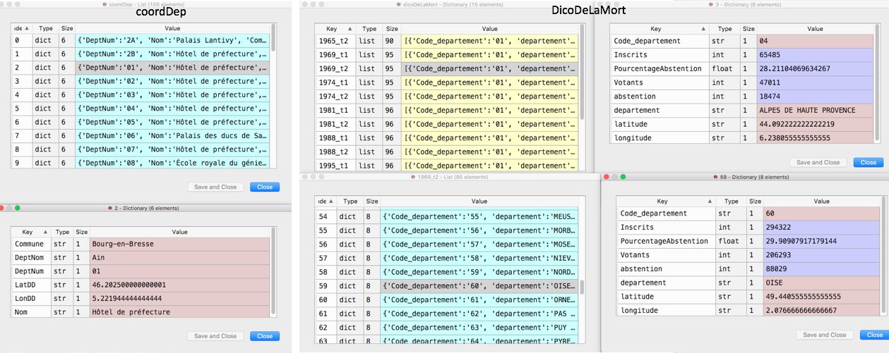
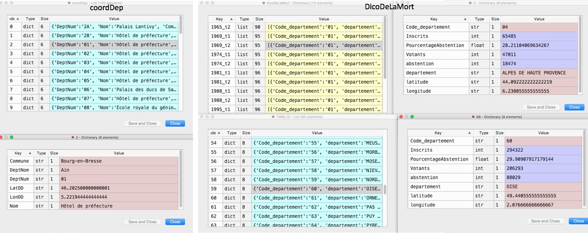

Le taux d'abstention aux élections présidentielles françaises de 1965 à 2007
Projet de cartographie interractive d'Elisa MENDELS 1G9
Présentation générale
Ce projet vise à montrer les abstentions aux éléctions présidentielles par departement.
La base de données
Nous avons utiliser la base de donné du gouvernement français: data.gouv:
- les information sur les éléctions (ici). Nous avons utiliser les formats exels (je n'avais pas vu les fichiers CSV) que nous avons reformater à la main (enlever les données sur les resultats de l'élection).
- les coordonnées des préfectures (ici) pour avoir par département une unique coordonnée, soit celle de la préfecture
Comme nous avons modifié les données "à la main", voici les tables finales sur lequeles le programme s'execute : le dossier contenant toutes les tables
Demarche associée au projet
J'ai souhaité répondre à une question:
- Quelles sont les départements avec le plus grand taux d'abstention?
J'ai rencontré beaucoup de problème au niveau des formats des tables. Tout d'abord certaines n'avais pas les mêmes clées, et ensuite elles n'avaient pas toutes les même departement due aux réguliers changements d'administration (la Corse en est le meilleur temoin). De plus il y avait des espaces dans certain nombres. Et encore quelques petits problèmes mineurs. Ainsi, certain problèmes ont du être résolus à la main (pour plus d'efficacité).
J'ai appris grâce à ce projet:
- mieux gerer les données
- utiliser folium et un petit peu vegalite
- il n'y a pas tout qui marceh comme on veut out le temps
- l'estimation du temps est souvent asser biaisé par l'ignorance des choses sur lequelles on va travaillé
Explication du code
Le code en lui même



 



Le resultat
Les abstentions
Les pourcentages d'abstention
Quitter cette page
L'acceuil
Les autres projets